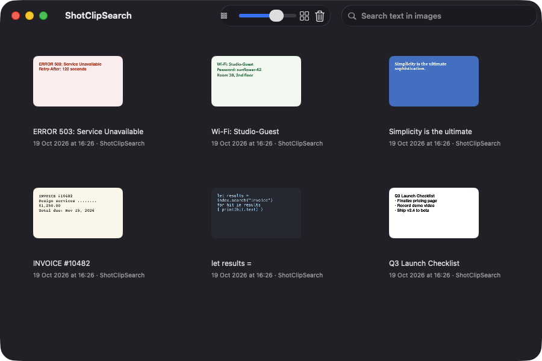
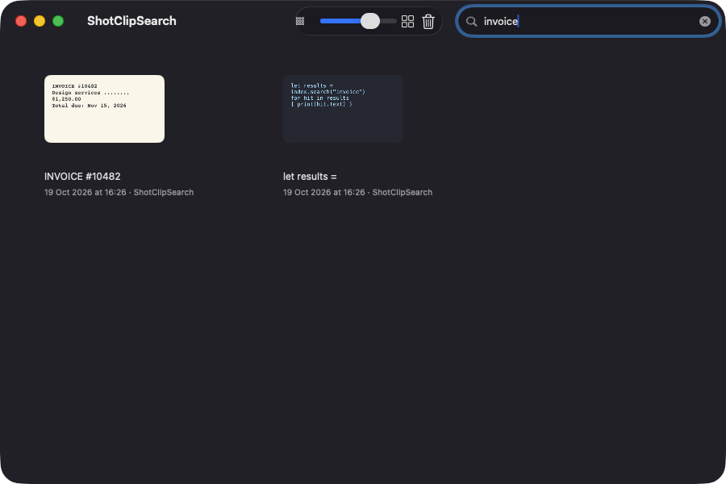
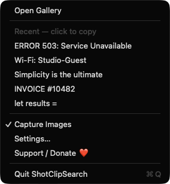
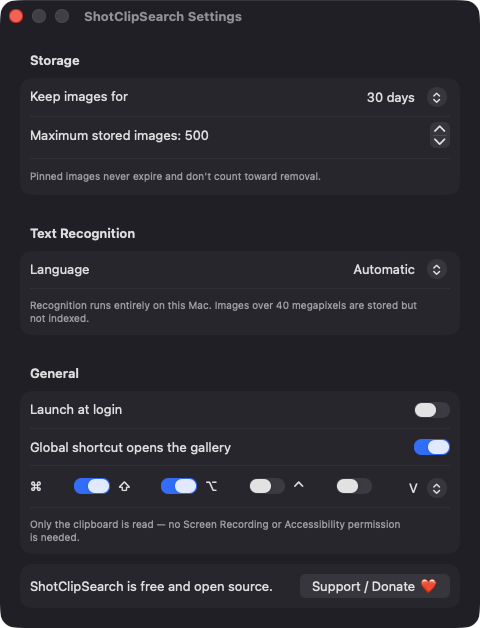

Image-first clipboard history
Watches the clipboard for PNG, JPEG and TIFF images, including screenshots copied with Control Shift Command 4. Text copies are ignored.
Open source · macOS 14+ · Universal binary · Clipboard
ShotClipSearch saves each image you copy and reads the text in it on-device. Press Command Shift V, type a word, and copy the right picture back.
Free & MIT licensed · Apple Silicon & Intel · Latest release

Features
Everything runs locally, from capture to text recognition to search.
Watches the clipboard for PNG, JPEG and TIFF images, including screenshots copied with Control Shift Command 4. Text copies are ignored.
Apple Vision reads the text in each image in the background. Choose automatic detection or a specific language in Settings.
The search field matches recognized text, the source app name and the date. Cards show the first line of text and a timestamp.
Open it with Command Shift V, move with arrow keys, press Return to copy back, Space to preview and Delete to remove.
Keep images for 7, 30 or 90 days, or forever, and cap storage between 50 and 1000 images. Pinned images never expire.
No server, account or network code. Images, thumbnails and the index stay in a folder on your disk. Transient pasteboard items are skipped.
Screenshots



Install
ShotClipSearch is open source and not notarized with a paid Apple Developer ID, so macOS needs one extra step the first time.
xattr -cr /Applications/ShotClipSearch.app
Download
Free, forever. Built for macOS 14 Sonoma or newer, Apple Silicon and Intel.
Not notarized: on first launch right-click ShotClipSearch.app → Open.
FAQ
Yes. It is released under the MIT license and the full source is on GitHub. There are no accounts, subscriptions or paid tiers, and an optional Support button links to Ko-fi.
None. It only reads the clipboard, never captures your screen, and the global shortcut does not need Accessibility access. Launch at login is optional and appears in Login Items.
Images, thumbnails and a JSON index are kept in ~/Library/Application Support/ShotClipSearch/ on your Mac. Text recognition runs on-device and nothing is sent over the network.
Notarization requires a paid Apple Developer account, and this is a free project. Right-click the app and choose Open once to launch it, or build it yourself from source with Xcode and XcodeGen.
Support ❤️
ShotClipSearch is a free, open-source alternative to paid utilities. If it earns a spot on your Mac, a coffee keeps the updates coming.
☕ Support Or on Ko-fi